耳机空间音效与 HRTF 卷积核使用指南
English · 回到首页 · 怎样读卷积核分析图 · 设计与处理链
Soundstage IR Generator 为耳机回放生成四路径卷积矩阵。从模板出发，调整声场，生成卷积核，然后导出给 Equalizer APO，或直接处理一首双声道歌曲。
开始使用 · 模板调整 · 配置与生成 · 逐源编辑 · 图表 · 导出 · 处理歌曲
开始使用
下载 Windows x64 发布包，将整个文件夹解压到有写权限的位置，运行 SoundstageIRGenerator.exe。发布包包含 .NET 运行时；生成卷积核、导出 WAV 和 APO 配置可以直接使用。处理歌曲还需要 FFmpeg。
窗口右上角可以切换“简体中文”和“English”。首次启动时，中文系统使用简体中文，其他系统使用英文；之后采用 settings/language.json 保存的选择。切换语言会更新页面、模板介绍、图表和结果说明，保留当前参数与卷积结果。处理过程中语言选择暂时禁用。
配置名、反射源名和路径保持用户填写的内容。英文界面从内置模板建立配置时使用英文默认名称；导入中文命名的项目后，名称仍然保留。中英文界面使用相同的 JSON 配置格式。
| 页面 | 在这里做什么 |
| 模板选择 | 选择声场，打开整体参数编辑窗口 |
| 配置 | 调整直达声、人头、混响比例、随机细节和 EQ；生成并分析卷积核 |
| 导出与后处理 | 导出 WAV、APO 配置，或用当前结果处理歌曲 |
第一次试听可以选择“宽阔监听”，保留默认参数，点击确认并生成卷积核。程序进入配置页并计算结果；完成后自行切换到“导出与后处理”，导出 Equalizer APO 配置。
调整模板
点击模板卡片打开参数窗口。确认载入参数；确认并生成卷积核在载入后开始计算；取消保留原项目。需要返回调整时，在模板选择页点击调整当前模板…。
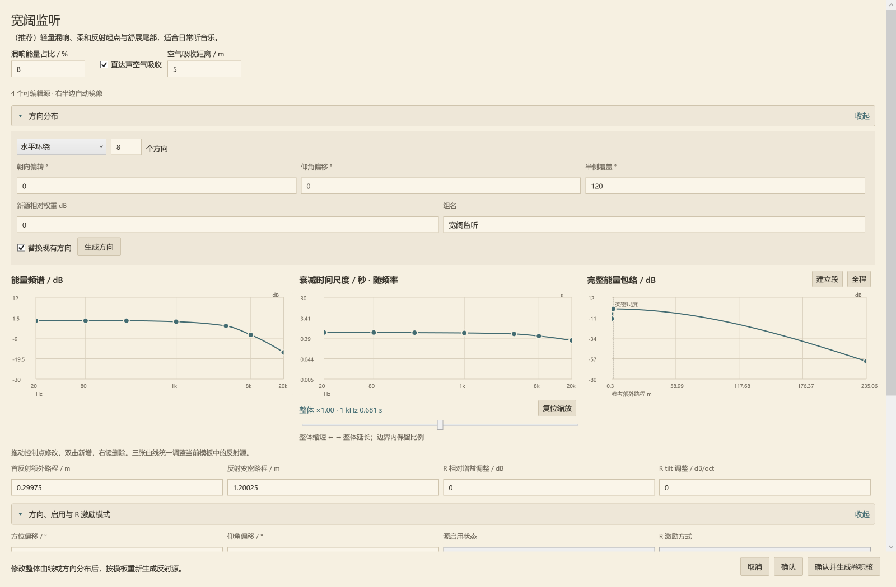
三条曲线各管什么
| 控制项 | 含义 | 调整示例 |
| 能量频谱 / dB | 反射核在各频段的整体能量轮廓 | 降低高频部分，让反射声更暗 |
| 衰减时间尺度 / s · 随频率变化 | 各频段拖尾的时间尺度 | 缩短高频尾巴，同时保留低频衰减 |
| 完整能量包络 / dB | 从起始、建立到衰减的局部平均能量 | 让早段快速下降到较弱长尾，或渐渐建立 |
拖动控制点编辑，双击增加点，右键删除点；精确控制点编辑区可以直接填数字。频率曲线使用对数频率轴和保形插值。整体衰减时间倍率改变整体长短，同时在参数范围内保留各频段比例；复位倍率恢复乘数。
能量与时间通过合成过程关联，但含义不同。延长某频段的衰减，是把目标能量分配到更长时间，不会自动增加其总能量。与直达声的总比例由配置页的混响能量占比 / %控制。
用路程表达时间
首反额外路程 / m是相对直达参考的额外传播路程。除以声速 343 m/s 就是起始延时：0.343 m 对应 1 ms。反射变密路程 / m控制建立段和反射密度变化的尺度；这一段的能量可以上升、持平或下降。
包络图可以切换建立段和完整范围。横轴表示等效累计路程，不是房间半径。直达声的空气吸收距离 / m另管空气造成的频率损耗，只有启用空气吸收才生效。
衰减编辑范围为 0.005–30 s，额外路程与变密路程为 0–3430 m，空气吸收距离为 0–10000 m。超出支持范围的值会钳位；更长的参数可能生成更长的卷积核。
方向分布与逐源细调
方向模板包括水平环绕、球形、半球、前向扇区和镜像成对分布。调整数量、朝向和覆盖范围后，使用方向生成按钮应用；支持 2–32 个方向的偶数数量，对称面上的方向只保留一份。
修改整体曲线或方向分布并确认，会向下重新生成反射源。重新打开模板后，保持这些设置不变并确认，会保留逐源细调。配置页的撤销可以恢复确认模板前的项目。
配置与生成
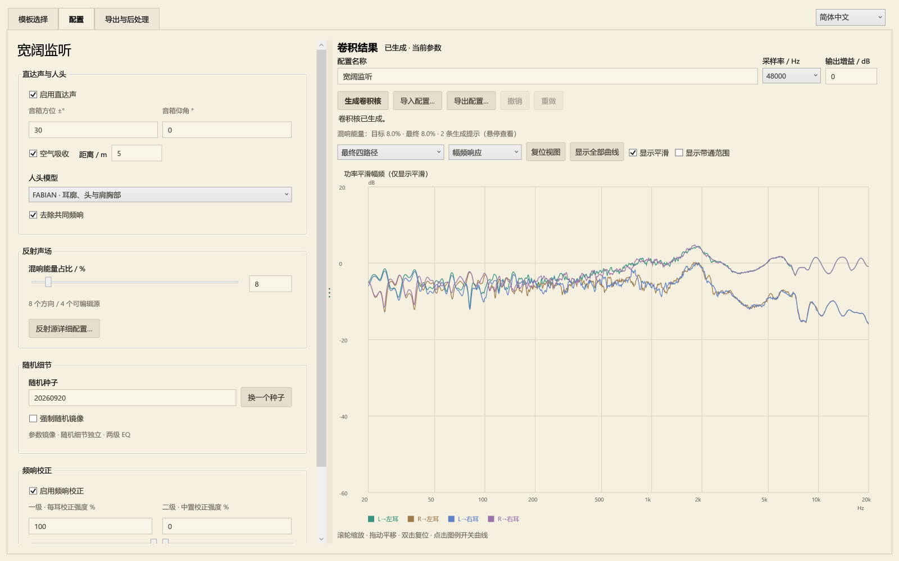
设置区和图表区之间可以拖动调节比例。较窄窗口改为上下排列。配置名称、卷积核采样率、输出增益、生成卷积核、导入配置、导出配置都位于结果图旁。
修改声学参数后，已有图表继续显示，同时标记结果待更新。点击生成卷积核重新计算。导出页会显示尚未生成、参数已修改、正在生成或可导出；WAV、APO 和歌曲处理使用同一份生成结果。
直达声与人头
音箱方位角控制左右镜像音箱的夹角，仰角控制高度方向。内置模板采用 ±30°。启用直达声决定是否保留两只虚拟音箱的直达路径；空气吸收按指定距离改变直达声频谱。
空气吸收距离不直接施加距离衰减或整段传播等待。图表零点采用同侧直达参考主峰，导出文件记录共同前导样本并保留相对到耳时差。
• FABIAN：使用测量的人头、耳廓和躯干响应；内置模板默认采用它。
• 球形头：使用简化头部遮挡与到耳延时，可调整相应头部参数。
• 去除共同频响：移除 FABIAN 数据中跨方向共有的频响轮廓，保留方向之间的差异。
FABIAN 还包含固定的边缘带宽延伸与非相干人头功率校准。它们与上述共同频响开关的作用见人头处理说明。
混响能量占比
混响能量占比 / %的目标是最终人头处理、EQ 和带通之后的 Ewet / (Edry + Ewet)。参考输入为 20 Hz–20 kHz 内左右独立、等功率的平坦功率谱，对两耳累计；干湿交叉项不计入这个分量比例。25% 对应混响能量与直达能量之比为 1/3。
反射源电平用于分配相对权重。所有源统一 −6 dB，与统一 0 dB，在同一混响目标下得到相同的归一化声场。用源之间的差异调方向，用总百分比调干湿。
生成器预估 EQ 带来的能量偏移，求解一个共同的宽带混响增益。所有反射方向、输入和频段共享这个标量，保留相对权重、频谱形状、相位与包络。结果报告目标和最终占比。关闭直达声时，界面占比锁定为 100%；重新启用后恢复原设定。
随机细节与对称
对比参数时保持随机种子不变；更换种子会改变随机细节。普通参数修改保留其他源的随机实现，稳定源 ID 和种子随 JSON 保存。
源参数始终左右镜像，并交换 L/R 激励。强制随机镜像只决定成对源的随机实现是否逐样本镜像，默认关闭。无论这个开关如何，FABIAN 的头部解剖响应都采用镜像处理。严格随机镜像时使用共同一级 EQ；关闭时允许左右耳分别校正，再进行共同二级校正。
频响校正
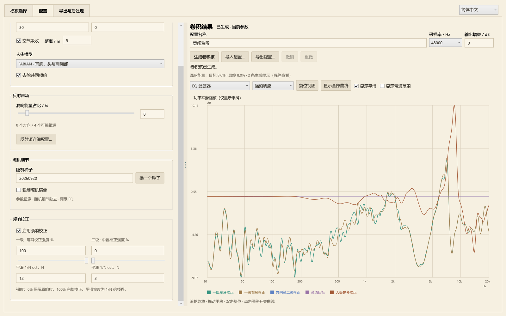
启用频响校正控制校正链路；FABIAN 人头功率校准先于可调的两级音色校正。
| 参数 | 默认值 | 作用 |
| 一级：单耳 EQ 强度 / % | 100 | 修正每耳在 L/R 同相输入下的平滑响应 |
| 一级平滑分母 N | 12 | 一级校正使用 1/12 倍频程功率平滑 |
| 二级：中置 EQ 强度 / % | 0 | 根据一级校正后两耳复响应的平均，设计共同校正 |
| 二级平滑分母 N | 3 | 二级校正使用 1/3 倍频程功率平滑 |
输入的是分母：12 表示 1/12 oct，3 表示 1/3 oct；分母越大，保留的频谱细节越多。强度按 dB 比例缩放修正量，0% 旁路该级。严格随机镜像时不使用二级。
最终四路径使用共同标量做输出标定，不逐条独立拉平。不同输入相关性仍会得到不同频谱；频响图解给出实际例子。强校正、有限长度误差和剩余平滑偏差会出现在结果信息里。
编辑单个反射源
在配置页点击反射源详细配置…打开独立编辑窗口。列表对应可编辑的半边参数，方向图显示完整镜像声场。点击方向选择源，拖动空白区域旋转视图，使用复位朝向恢复视角。
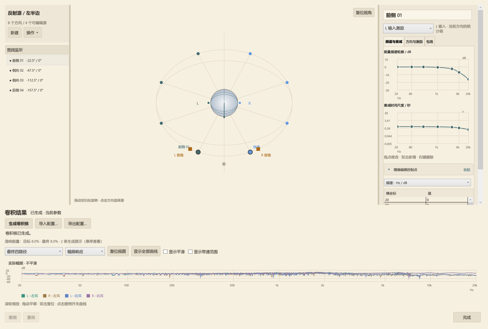
选择 L 或 R 激励进行编辑。自动 R 继承 L 的时间参数，通过相对增益与频谱 tilt 改变能量；手动模式则提供完整参数。同一方向的 L/R 激励默认使用独立随机实现，不同方向也默认独立。同一方向、同一输入的核同时送到两耳的人头滤波器，保留共同激励关系。
源列表与操作菜单支持多选、参数复制和删除。复制参数保留目标方向，并分配独立随机细节。图表可以检查所选源的人头前激励或人头后路径。点击完成关闭窗口并保留编辑；重新生成后更新最终结果。
查看与操作图表
先选择分析对象，再选择图型。例如选最终单耳同相响应和幅频响应，可以检查校正后的一级参考。
| 分析对象 | 展示内容 |
| 最终四路径 | 实际导出为 WAV 的四条核 |
| 最终单耳同相响应 | 校正后，每耳的 L/R 输入路径复数相加 |
| EQ 前单耳同相响应 | 对应的校正前合成响应 |
| 直达声四路径 | 最终空间 EQ 之前的直达分量 |
| 所选源的人头前／后响应 | 对应的激励核或到耳路径，尚未做最终输出校正 |
| EQ 滤波器 | 人头校准、一级、二级与带通目标 |
| 图型 | 观察内容 |
| 幅频响应 | 单条路径频谱，或选定合成参考 |
| 冲激响应 | 共同时间零点附近的到达与拖尾结构 |
| 能量衰减 | 反向积分的剩余能量，每条曲线分别归一化 |
| 展开相位 | 扣除共同前导后的展开相位 |
| 群延迟 | 同样扣除共同前导的相位斜率 |
滚轮缩放，拖动平移，双击绘图区或点击复位视图恢复。点击图例切换曲线，双击或右键菜单独看某条，显示全部曲线恢复所有曲线。
显示平滑只改变绘出的幅频曲线，使用一级平滑宽度，不改变或重新生成卷积核。显示带通范围将幅频范围扩展到 5 Hz 起、低至 −100 dB；关闭恢复常用的 20 Hz–20 kHz。20 Hz 与 20 kHz 位于带通目标的通带内。
调整窗口大小期间使用缩放预览，松开后恢复清晰图表。图表操作复用已分析的结果。完整的卷积核图解进一步说明路径频谱、衰减曲线和时频图，以及文件长度、衰减参数、测得 RT 之间的区别。
导出与路由
导出配置…保存参数与种子的 JSON，无需先生成。导出 WAV将卷积核写入指定导出父目录。导出 Equalizer APO 配置在程序旁的 EqualizerAPO/ 下建立独立文件夹，包含四条 WAV 和路由文件。
文件夹使用可读的模板／配置名称和时间戳。修改配置名会更新输出名称；单纯改名保留核样本。重名导出使用 _02 等序号，避免覆盖。路径和结果文字支持选中复制；复制路径与复制结果信息可以复制完整内容。
四条文件，两只耳朵
名称按“输入 → 耳朵”解释。四通道路径包的固定顺序如下：
| 打包通道 | WAV 后缀 | 含义 |
| 1 | L_to_LeftEar.wav | 左输入 → 左耳 |
| 2 | R_to_LeftEar.wav | 右输入 → 左耳 |
| 3 | L_to_RightEar.wav | 左输入 → 右耳 |
| 4 | R_to_RightEar.wav | 右输入 → 右耳 |
路径包名为 Matrix_PATHS_LL_RL_LR_RR.wav，用于矩阵路由。四条单声道文件的组合为：
左耳 = L * L_to_LeftEar + R * R_to_LeftEar
右耳 = L * L_to_RightEar + R * R_to_RightEar
* 表示卷积。WAV 为 IEEE float32，支持 44.1、48、96 kHz；使用时保留各路径的相对电平与时差。
Equalizer APO
将导出的 配置名_Equalizer_APO配置.txt Include 到自己的 APO 配置。路由先从 L/R 复制临时声道，分别卷积，再赋值回输出：
Copy: LL=L LR=L RL=R RR=R
# 中间由导出文件提供四组 Channel / Convolution 指令。
Copy: L=LL+RL R=LR+RR
最后的 Copy 用处理后的和替换 L/R，无需另加原始干声。导出文件包含完整绝对 WAV 路径；移动文件后重新导出。设备采样率应与卷积核一致。
保留自己习惯的耳机 EQ 作为回放参考。空间核已经带有声场校正与带通；输出增益 / dB和播放音量用于管理电平。结果信息里的频点峰值、保守瞬态上界，与共同能量／参考标定是不同指标。
处理歌曲
打开导出与后处理 → 处理歌曲，把当前声场直接写入普通双声道音频文件。
1. 点击选择 ffmpeg.exe…，选择完整 FFmpeg 构建；同目录需有 ffprobe.exe，构建需支持 libsoxr。选择后检查可用性，也可以手动重新检查。FFmpeg 下载页列出可用构建。
2. 拖入歌曲，或点击选择音频文件。支持单声道和双声道，以及 WAV、FLAC、MP3、M4A 等格式。
3. 选择输出格式、输出父目录和电平处理模式。
4. 点击处理并导出。输入会重采样到核的采样率，经过矩阵卷积，输出包含完整拖尾；输入文件保留。
FFmpeg 路径保存在 settings/audio-tools.json，与声场 JSON 分开。自动查找清除明确指定的路径，搜索程序旁 tools/ffmpeg/、%ProgramFiles%/ffmpeg/bin/ 与 PATH。
| 电平模式 | 处理方式 |
| 归一化到目标 LUFS 后限幅 | 测量卷积后响度，施加固定增益接近目标（默认 −18 LUFS），再做双声道联动限幅 |
| 保留卷积电平，仅限制峰值 | 省略响度归一化增益，限制峰值 |
| 旁路：原始卷积输出 | 输出未经响度和限幅处理的结果；float32 WAV 可保留超过整数满刻度的样本 |
输出包括 float32 WAV、24-bit FLAC、AAC/M4A。编码和峰值处理可能影响最终电平；成品响度与真峰值会重新测量，记录在 render.json。响度增益直接写入样本，不依赖 ReplayGain 标签。
处理好的歌曲已含空间效果。播放时关闭重复的空间卷积；个人耳机 EQ 可以继续使用。
模板参考
以下是内置起点，各方向可以有不同能量、衰减与包络。1 kHz 尾长参考是参数，不是整条核的实测 RT60。
| 模板 | 方向数 | 分布 | 1 kHz 尾长参考 / s | 混响能量 / % |
| 紧凑监听 | 6 | 水平环绕 | 0.20 | 8 |
| 宽阔监听 | 8 | 水平环绕 | 各方向 0.56–0.78 | 8 |
| 前向空间 | 6 | 前向扇区 | 0.24 | 9 |
| 温暖环绕 | 12 | 水平环绕 | 0.55 | 28 |
| 明亮短厅 | 8 | 球形 | 0.48 | 32 |
| 上方包围 | 12 | 上半球 | 0.62 | 24 |
| 控制室 | 8 | 球形 | 0.22 | 5 |
| 自由场 | 0 | 仅直达声 | — | 0 |
| 柔和音乐厅 | 12 | 球形 | 1.35 | 65 |
| 悠长大厅 | 12 | 球形 | 2.30 | 80 |
| 空白模板 | 0 | 自行添加方向 | — | 添加反射源前实际为 0 |
内置模板采用 FABIAN 并去除共同频响，关闭强制随机镜像，一级为 100% / 1⁄12 oct，二级为 0% / 1⁄3 oct。宽阔监听是作者的日常起点，包含 5 m 直达空气吸收。默认源参数采用易读的小数；用户自己填写的精度在编辑和 JSON 中保留。
保存与继续编辑
使用导出配置…保存 JSON，之后通过导入配置…继续调整。配置保存曲线、方向、人头设置、EQ、稳定源标识和随机种子；载入后重新生成即可重建声场。
可写的便携目录中包含 projects/、exports/、EqualizerAPO/、processed-audio/ 和本机 settings/。保留完整程序文件夹。分享可复现的对比时，提供配置 JSON、程序版本、耳机回放设置和修改项即可。
设计哲学与信号模型
English · 首页 · 卷积核图解
以听感和调校为中心
Soundstage IR Generator 用可编辑的声场，为耳机中的音乐增加空间。能量频谱、衰减时间和方向分布对应具体可听的变化；保存参数和随机种子，让调校可以重现、比较和分享。
我们以头部周围的一组等效入射方向描述反射声场。每个方向都有自己的统计核，经过头部遮挡、时差、耳廓和肩胸部响应，汇成两耳输出。六到十二个方向提供了实用的调音空间，少量不同的方向、频谱和时间结构就能产生丰富变化。
研究约束统计特征，听感决定具体调校。 宽尺度频谱和衰减曲线规定整体颜色与拖尾；因果随机核提供细密的时频结构。预设是这一模型下的人工调音起点，便于从干净监听逐步探索包围感与长尾。
我们把声场当作可以设计的听音条件：通过分散的时间细节与人头方向线索打开空间，并自由选择反射的颜色与拖尾。平滑音色校正也是设计的一部分。最小相位 EQ 调整宽尺度频谱平衡，统计尾部仍以完整脉冲响应参与卷积，校正强度由听感决定。
从方向核到四条路径
对方向 d，分别构造 L/R 输入的固定核 g[d,L]、g[d,R]。同一方向、同一输入的核同时送往两耳对应的人头滤波器 h[left,d]、h[right,d]。
H_{e\leftarrow i}=H^{direct}_{e\leftarrow i}+\sum_d h_{e,d}*g_{d,i}
其中 i 为输入，e 为耳朵，* 为卷积。两个输出为：
y_l=H_{l\leftarrow L}*x_L+H_{l\leftarrow R}*x_R,\qquad
y_r=H_{r\leftarrow L}*x_L+H_{r\leftarrow R}*x_R.
音箱直达声同样经过人头，可先施加按距离计算的空气吸收。最终得到固定的 2×2 线性系统，四条路径共同归一化，保留双耳幅度和时间关系。
能量、衰减和相位一起生成
生成器使用约三分之一倍频程的平滑重叠频带，权重功率互补。每个频带以高斯噪声和因果时间包络生成响应。能量曲线控制整条方向核的宽尺度频谱；衰减曲线控制各频段的时间尺度；完整包络控制首反、建立和尾部的局部平均能量。
改变衰减时间会重新标定频带能量，因此尾长和混响总量可以分别调节。反射密度随建立尺度变化；建立期的能量可以上升、持平或下降。
相位来自这条完整的时间信号，与幅度和衰减共同形成。以 g(t)=a(t)w(t)、w 为白噪声的简化模型为例：
\mathbb E[G(f)G^*(f+\Delta f)]=\int |a(t)|^2e^{j2\pi\Delta f t}\,dt.
这表达了时间能量分布与跨频率相关性的联系。较长尾部对应较细的频率变化尺度。独立、同统计的方向核相加时，协方差也相加；能量归一化后保留相同的相关结构。采用不同频谱或包络的方向，则按各自权重共同形成输出。
种子、稳定源 ID、输入激励流和固定频带次序共同决定随机实现。修改单个源可保持其他源的随机细节，便于听辨参数影响。
人头与共同频响
球形头提供简洁的遮挡和到耳延时模型。FABIAN 提供头部、耳廓和肩胸部的方向响应，当前使用固定 HATO 0 数据的最近方向采样。渲染器以实测左耳的全方向响应作为统一参考，右耳使用镜像入射方向对应的左耳响应。各方向形成左右对称的人头模型。20 Hz–20 kHz 的幅度及深谷保留；带外沿用各方向、各耳对应的边缘幅度。按所选采样率直接重建响应，保留带内超额相位结构和共同时间基准，最小相位部分随幅度目标变化。
FABIAN 默认启用作者提供的平滑最小相位逆共同传递函数。去掉共同频谱后，方向差异与已有耳机校准叠加；这个开关提供保留完整数据频谱的对照。耳机校准由用户现有播放链负责。
数据在堵塞耳道入口测得，部分低频与下方方向采用原作者的数值补全。来源、变换和许可见 FABIAN 说明。
FABIAN 的 EQ 链路首先使用等能量单位冲激测试全部启用方向，计算双耳平均的非相干功率，再用一个共同最小相位滤波器校正到平直目标。这一步不使用随机混响核、不叠加方向间的相干交叉项，也不作频率平滑。带外延伸与这项人头校正是固定处理，配置文件不提供单独开关；整体 EQ 关闭时旁路包括人头校正在内的 EQ，带外延伸仍生效。原有共同频响补偿选项保留。人头处理细节。
EQ 是可调的音色选择
经过共同人头校正 Q_h 后，同相测试输入下两耳响应为：
M_l=Q_h(H_{l\leftarrow L}+H_{l\leftarrow R}),\quad M_r=Q_h(H_{r\leftarrow L}+H_{r\leftarrow R}).
随机非严格镜像时，一级分别校正每耳响应的平滑幅度；二级以 (Q_l M_l + Q_r M_r)/2 设计共同 EQ。严格镜像采用一级共同 EQ。校正均为最小相位，强度按 dB 缩放后构造滤波器。
EQ 增益由平滑目标确定，校正使用由原始四路径长度决定的固定时间预算，有限长度引入的频响误差单独报告。频段功率采用局部正值积分，避免强弱频段间的大数相减损失精度；对零响应或非有限数值明确报错。最终共同标量按设定参考电平校准，频点峰值作为播放余量提示。
默认一级 100%、二级 0%，平滑宽度分别为 1/12 与 1/3 倍频程。二级根据同相参考校正，也会改变两侧内容的音色；保留强度控制便于按音乐和听感选择。
20 Hz–20 kHz 平直带通作为目标，与两级最小相位校正在频域合成，再用原有共同标量增益校准输出。平滑求逆覆盖 10–20 Hz 和 20 kHz 以上的过渡带，深阻带保持边界修正量。输出长度为原始长度加校正时间预算减一，预算取原始长度与一秒中的较大者；FFT 使用更大的补零缓冲区，输出末端平滑收尾，并报告截尾造成的幅频偏差。混响各频带的设计包络从 −70 dB 开始乘半余弦窗，到 −80 dB 降到零，再标定频带能量。图表分析最终生成的核，显示细纹、平滑轮廓、脉冲和能量衰减，帮助把听感变化对应到实际结果。
最终混响占比的预修正
生成器缓存直达与混响的复数频谱及分量能量密度，用一个全局混响幅度系数求解最终占比。一级功率平滑预先计算直达功率、混响功率和实部交叉谱，再按该系数组合；二级 EQ 启用时保留一级最小相位响应，依照两耳复响应合成计算共同修正。能量预测包含两级 EQ 和带通，数值求根在对数增益上进行。随机核与人头响应只生成一次，最终时域核在求解结束后合成。
预修正不为混响追加逐频段均衡。它只整体缩放混响，保留源的频谱、方向权重和时间结构；随后直达与混响共同接受既定空间 EQ。最终从有限长度输出重新统计占比，记录预修正增益、预测值、计算次数与残差。
从 FABIAN 到实际听到的声音
这套生成器以已经调校好的耳机为播放基础：FABIAN 提供方向相关的人头线索，统计混响提供可编辑的空间，再由实际耳机把两路电信号变成两耳听到的声音。已有的耳机 EQ 继续负责听者熟悉的音色基准。
从数字输入到耳膜，可以把整条链写成：
双声道音乐 → 四路径卷积矩阵 K → 已有耳机 EQ → 耳机及佩戴耦合 → 两耳
在频域中，忽略左右耳机之间的声学串漏，左耳的关系是：
p_left(f) = P_left(f) × [K_left←L(f) × x_L(f) + K_left←R(f) × x_R(f)]
右耳同理。这里的 K 包含生成器的人头处理、混响、最终 EQ 和增益；P 则把用户的耳机 EQ、耳机电声响应，以及佩戴时耳廓和耳道的声学耦合合在一起。这样，数字声场与实际播放端各自承担的作用就分开了。
三种校正各自负责什么
| 处理 | 校正的对象 |
| FABIAN 共同频响补偿 | 使用数据集提供的平滑逆共同传递函数（CTF），整理 FABIAN 的共同频谱成分，保留方向差异 |
| 生成器的最小相位 EQ | 根据当前四路径矩阵及设定的测试输入，整理数字输出的平滑频谱 |
| 用户已有的耳机 EQ | 让实际耳机趋近用户选择的音色目标，作为整个播放系统的基础 |
图表展示的是最终数字核的响应。实际耳膜声压还取决于 P；要精确预测这一段，需要听者佩戴该耳机时的传递函数。达到一个满意的耳机目标曲线，提供了实用的播放基准，与测量并反演个人耳机传递函数是两种不同的校准目标。FABIAN 的逆 CTF 对应人头数据的共同响应，也有别于特定耳机的逆响应。
为什么这种组合可以保留空间线索
如果两耳的播放传递函数近似一致，即 P_left(f) ≈ P_right(f)，它们主要表现为两耳共同的滤波。对于同一个虚拟方向，该共同部分会在两耳复响应之比中相消，因此数字信号中的双耳幅度差和相对相位可以近似保留。
共同滤波仍会改变各频段的相对权重，单耳的耳廓频谱线索也会受到播放端影响。实际左右耦合差异、佩戴位置，以及听者与 FABIAN 的耳廓差异，共同决定最终的音色、方向感和外化程度。因此，本项目把已有耳机调校作为基准，再通过方向分布、混响和空间 EQ 的试听调整来选择结果。
耳机传递函数与佩戴变化也是双耳重放研究中的重要内容。Schärer 与 Lindau（2009）比较了多种耳机均衡方法，并讨论了个体差异和重复佩戴对补偿的影响。
这套取舍服务于“在满意的耳机音色上增加可调空间”的目标。若进一步追求真实音箱与虚拟音箱的声压匹配，可以测量个人耳机传递函数，在一致的测量参考位置设计重放补偿。FABIAN 数据采用堵塞耳道入口作为参考；处理这一层时，需要同时考虑入口到耳膜的传递与耳机的声学负载关系。项目目前采用的通用方案，则以既有耳机调校、共同频响处理和可调的数字音色校正相结合。
模板的调配依据
宽阔监听内嵌作者认可的配置，保留源标识、曲线形状、8% 反射能量和一级 1/12 倍频程平滑。通用默认仍为 1/12。
控制室参考控制室对照试听中清晰、克制的特征来调配：直达声占主导，早段较快下降，接一段更轻的短尾；反射频谱和衰减时间向高频逐渐降低。0.22 s 尾长尺度、5% 混响比例是人工调音选择。八个镜像方向有适度的电平和时间差别。完整包络在归一化坐标 −1、0、0.08、0.35、1 处分别取 −2、−6、−20、−36、−60 dB，使早段快速下降与低电平残余尾部分开。实际输出另行分析，区分参考尺度与测量结果。
自由场去掉统计反射贡献，保留两只经人头滤波的音箱。共同频响去除、EQ 和输出带限与其他模板使用同一条处理链。
研究来源
Traer 与 McDermott (2016)研究自然混响的统计特征与感知作用，为频率相关衰减提供背景。FABIAN 数据与论文提供方向响应。统计合成、人工预设和可调 EQ 构成本项目的声场设计方法。
怎样读卷积核的分析图
English · 首页 · 使用指南 · 设计与信号模型
下面的图由 4.13.0 实际生成的卷积核计算，展示方向频响、输入相关性、混响占比和衰减之间的关系。均使用内置模板、48 kHz、随机种子 20260920、FABIAN 与共同频响补偿；一级 EQ 为 100%、1/12 倍频程，二级为 0%。分析元数据记录了结果和文件哈希。
单条路径与合成响应
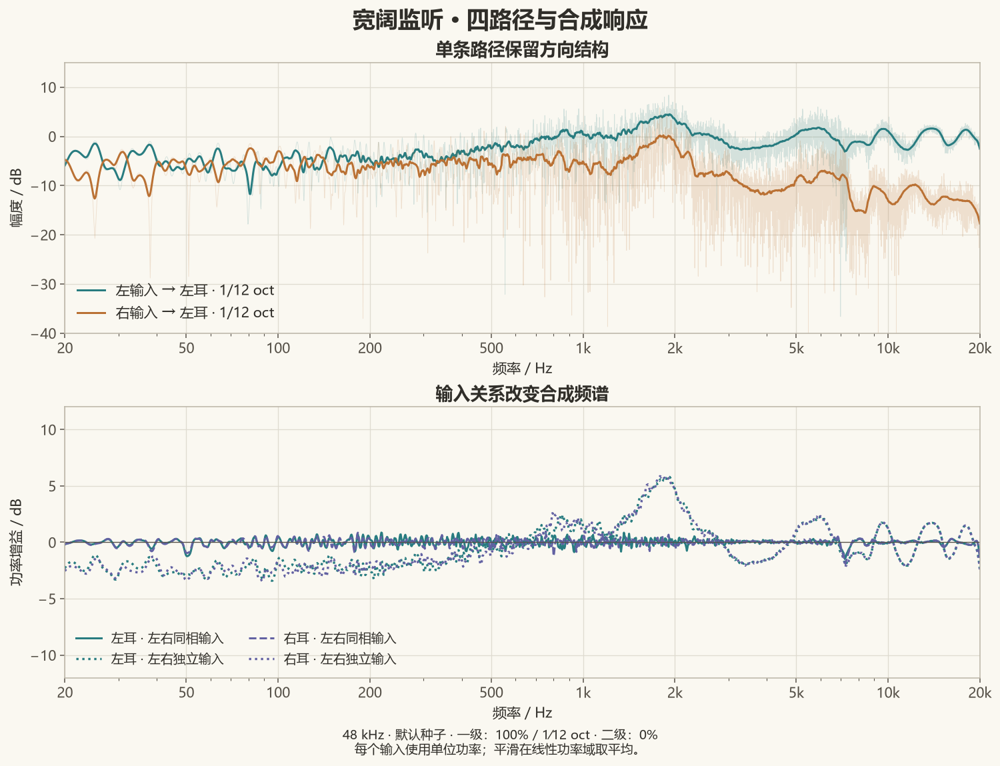
只看左耳，将左输入到左耳的路径记为 A，右输入到左耳的路径记为 B，左耳输出就是 A L + B R。上图的浅线来自未经平滑的 FFT，深色线为线性功率域的 1/12 倍频程平滑。跨侧路径的高频更弱，单条路径保留方向结构。
下图比较相同四路径矩阵的两种激励方式，每个输入的功率均以 1 为基准：
| 输入关系 | 左耳输出功率 |
| 左右同相且相同 | |A+B|² |
| 左右独立、等功率 | |A|²+|B|² |
前者保留相位产生的交叉项；后者的交叉项在统计平均下为零。因此两组曲线本来就可以不同。一级 EQ 使用的是每耳在左右同相输入下的平滑响应，不是分别把四条路径拉平。二级 EQ 则根据一级校正后双耳复响应的平均设计共同修正；它没有从音乐中提取独立中置音源。
软件中可选择“最终四路径”查看方向响应，选择“最终每耳同相输入响应”查看合成参考。图中的独立输入曲线为额外离线计算示例。不同音乐的左右相关性不同，因此 EQ 强度对听感的影响也可以不同。
拖尾长度与混响占比
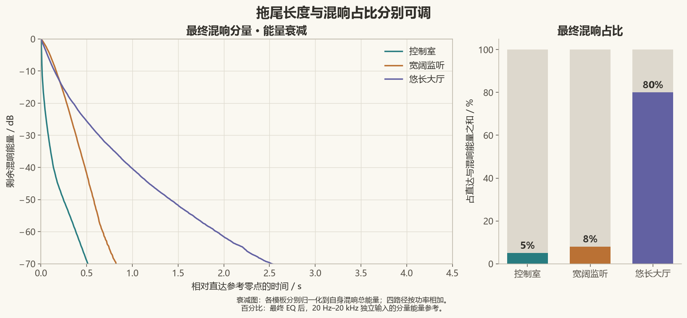
左图只取最终混响分量，将四路径样本平方相加，从末尾反向积分，再除以该模板的混响总能量。于是每条能量衰减曲线都从 0 dB 开始，展示的是剩余能量比例：
EDC(t) = 10 log10 [t 之后剩余的混响能量 / 混响总能量]
这种各自归一化会隐藏模板之间的绝对干湿差异，所以右图另外列出最终混响占比：控制室 5%、宽阔监听 8%、悠长大厅 80%。占比来自生成器的 20 Hz–20 kHz 独立等功率输入、双耳合计参考，排除干湿交叉项；不是响度百分比，也不是所有歌曲都保持不变的比例。
文件长度、衰减参数与拟合值
| 模板 | 最终文件长度 | 宽带混响 T20 外推值 | 最终混响占比 |
| 控制室 | 1.725 s | 0.171 s | 5.00% |
| 宽阔监听 | 2.749 s | 0.698 s | 8.00% |
| 悠长大厅 | 8.702 s | 1.259 s | 80.00% |
文件长度还包含校正滤波器的时间支持和极小电平的末端。模板的“衰减时间尺度”描述各频带的包络参数。这里的 T20 是对最终混响宽带 EDC 的 −5 至 −25 dB 区间拟合斜率，再外推到下降 60 dB 所需的时间。三者不必相等。
自定义包络、不同频率的衰减以及很弱的长尾都会影响这些量。表中的外推值描述这几条生成结果的宽带衰减。拟合优度保存在元数据中。调整时，EDC 用于看下降过程，包络曲线用于改变形状，混响占比用于控制相对直达声的总能量。
混响音色随时间变化
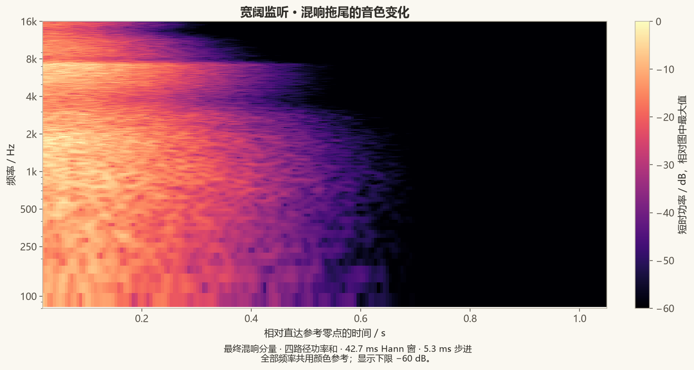
此图只包含最终混响分量，使用 2048 点 Hann 窗、256 点步进，即约 42.7 ms 窗长和 5.3 ms 步进。四路径的短时功率相加，全部频率共用同一个颜色参考。高频后段变暗，表示高频混响能量更早减少，不是每个频率单独归一化后的视觉效果。
能量频谱决定某个频段累计分到多少能量；衰减时间尺度决定这些能量怎样分布在时间上。较弱的长高频尾巴和较强的短高频尾巴是两种不同结果。人头处理和最终 EQ 也会影响图中频谱。
这个窗长适合看拖尾总体变化。直达峰和最初几毫秒应看软件里的“脉冲响应”。
相位与群延迟怎么看
“展开相位”和“群延迟”扣除了共同直达参考的前导时间，仍保留各路径之间的差异和拖尾自身的时间结构。将它们与幅度和脉冲图配合使用：脉冲图看时域到达，衰减图看持续程度，相位和群延迟图用于比较同一路径的变化。
干涉深谷附近的群延迟是局部相位斜率，不必对应一条独立反射的到达时刻。生成器保留统计核自身的幅相结构；最小相位描述的是校正滤波器，整个混响拖尾没有被重建成最小相位脉冲。
图片与计算来源
代码版本为 42c782826e9fd68503345deae77885837203f291（4.13.0）。使用指南中的中英文界面图由该版本的 WPF 控件离屏渲染。分析读取 GenerationResult.Kernels 和 FinalReflectionPaths 的 float32 样本，最终四路径与 WAV 导出的样本、顺序一致。
频响来自补零到下一次幂长度的 FFT；平滑先在线性功率域对 f × 2^(±1/24) 区间积分并取平均，再转为 dB。相干参考先做复数求和；独立参考先求各路径功率和。EDC 使用完整混响样本反向积分。时频图显示 80 Hz–16 kHz，颜色下限 −60 dB。
比较自己的配置时，可以固定随机种子、保存 JSON，每次修改后重新生成，并使用相同的图表对象和显示方式。
User guide
简体中文 · Home · Reading the analysis plots · Signal model
Soundstage IR Generator creates a four-path convolution matrix for headphone playback. Begin with a template, shape the field, generate its kernels, then export them to Equalizer APO or render a stereo audio file.
Get started · Template editing · Configuration · Individual sources · Plots · Export · Audio files
Get started
Extract the complete Windows portable folder into a writable location and run SoundstageIRGenerator.exe. The download includes the .NET runtime. Kernel generation and WAV/APO export are ready to use; song rendering additionally uses FFmpeg.
Choose English at the top right. On first launch, Chinese systems use Simplified Chinese and other systems use English. The saved choice in settings/language.json is used thereafter. Switching language updates pages, template descriptions, plots and result details while preserving parameters and generated kernels. The selector is temporarily disabled while processing.
User-defined configuration names, source names and paths stay as written. Built-in templates created in English receive English default names. A configuration JSON works in either language, so an imported project can retain Chinese names in the English interface.
| Page | What to do there |
| Templates | Pick a starting field and open its shared parameter editor |
| Configuration | Set direct sound, head processing, wet balance, randomness and EQ; generate and inspect kernels |
| Export and post-process | Export WAV/APO files or process a song using the current result |
For a first listen, select Wide Monitor, leave its parameters at their defaults, and click Confirm and generate kernels. The application opens Configuration and computes the result. Then select Export and post-process and export the APO configuration.
Shape the template
Click a template card to open its parameter dialog. Confirm loads the settings without starting computation; Confirm and generate kernels loads and computes them. Cancel keeps the existing project.
Return to Templates and choose Edit current template… whenever you want to adjust the shared controls again. The three curves act on the template's reflection sources together, allowing broad edits without visiting every direction.
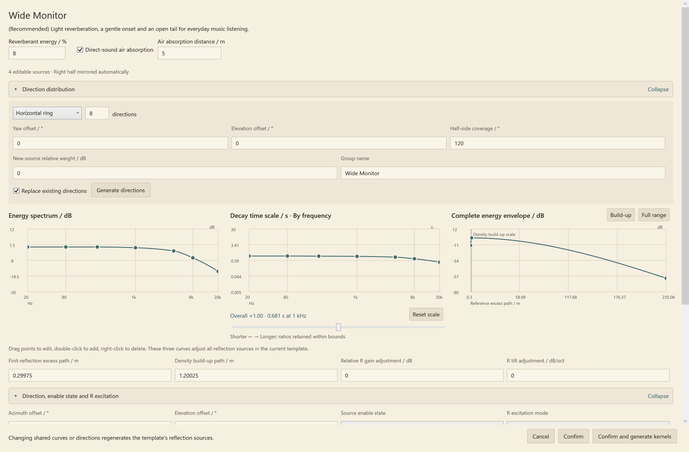
Three curves with different jobs
| Control | Meaning | A useful adjustment |
| Energy spectrum / dB | Broad integrated-energy contour of the reflected kernels | Lower the upper-frequency region for a darker reflected field |
| Decay time scale / s · By frequency | Tail time scale at each frequency | Shorten high-frequency tails while retaining lower-frequency decay |
| Complete energy envelope / dB | Local mean energy across onset, buildup and decay | Make the early section fall quickly into a quieter tail, or build it more gradually |
Drag curve points to edit, double-click to add a point, and right-click to remove one. Edit exact control points provides numerical editing. Frequency curves use logarithmic frequency coordinates and shape-preserving interpolation. The decay slider moves the overall time scale while retaining frequency ratios within the editing bounds; Reset scale restores the multiplier.
The energy and decay curves are related by synthesis, but each describes a different property. Extending the decay redistributes a band's target energy over more time; it does not automatically increase total reflected energy. The global Reverberant energy / % controls the balance against direct sound.
Distance-based timing
First-reflection excess path / m is additional travel relative to the direct reference. Divide it by 343 m/s to obtain the relative onset time: 0.343 m means 1 ms. Density build-up path / m sets the scale over which the reflection density develops. The energy envelope during that interval can rise, stay level or fall.
Use Build-up to inspect the beginning of the envelope and Full range for its tail. The envelope's distance axis is an equivalent accumulated path, not the radius of a physical room. Air absorption distance / m separately controls direct-sound spectral loss when enabled.
Decay editing spans 0.005–30 s; excess and buildup paths span 0–3430 m; air-absorption distance spans 0–10000 m. Values outside the supported editing range are clamped. Larger values can produce much longer kernels.
Direction distribution and downstream edits
Choose a horizontal ring, sphere, hemisphere, front sector or mirrored pairs. Direction count, orientation and coverage shape the distribution; Generate directions applies it. Templates use a small set of directions; the generator accepts even counts from 2 to 32. A median-plane direction is represented once.
Confirming changes to the shared curves or distribution regenerates the downstream sources. Reopening and confirming without changing those settings preserves individual-source edits. Undo on Configuration can restore the project before a confirmed template edit.
Configure and generate
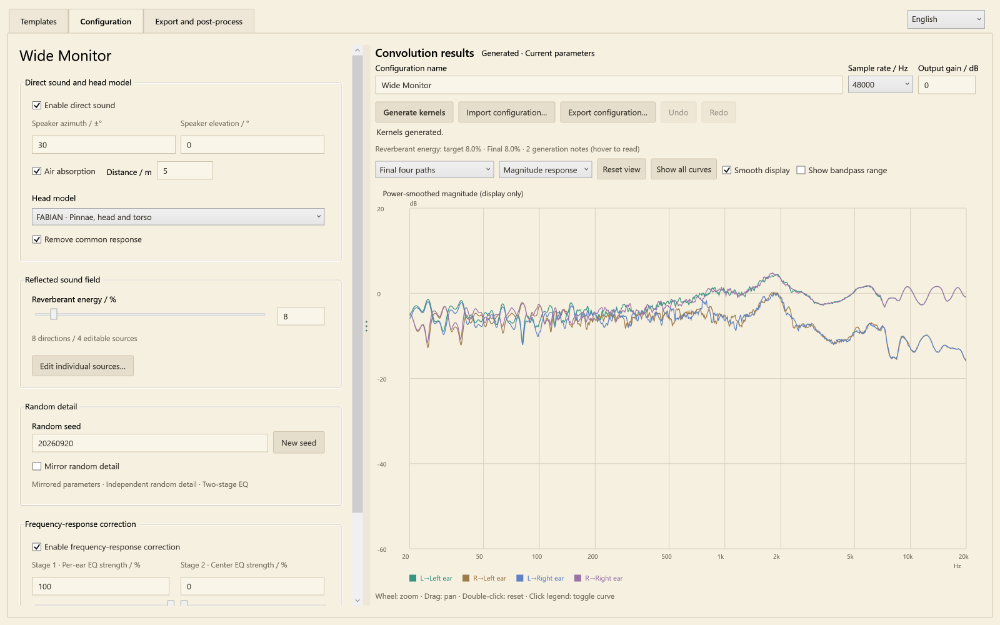
The settings and result plot share a draggable divider. Wide windows place them side by side; narrower windows stack them. Generation controls stay with the plot: Configuration name, Sample rate / Hz, Output gain / dB, Generate kernels, and JSON import/export.
Parameter changes leave the previous plot visible and mark it as outdated. Click Generate kernels to update it. The export page reports whether the result is missing, outdated, being generated or ready. WAV, APO and audio processing all use that same generated result.
Direct sound and head model
Speaker azimuth / ±° controls the mirrored left/right speaker pair; Speaker elevation / ° sets its elevation. Built-in templates use ±30° speakers. Enable direct sound includes their head-filtered direct responses.
FABIAN · Pinnae, head and torso supplies measured directional responses. Remove common response applies the dataset's inverse common transfer function. The spherical model supplies a simpler head-shadow and arrival-time alternative, with its own radius and shadow controls. The head model processes both the speakers and reflected directions.
Direct Air absorption uses the specified distance to color the direct spectrum. This distance does not add inverse-distance gain or a bulk propagation wait. The displayed time origin follows the reference ipsilateral direct peak; exported kernels retain their common lead-in and relative ear timing.
Reflected energy
Reverberant energy / % targets Ewet / (Edry + Ewet) after head processing, final EQ and band limiting. The reference is independent, equal-power inputs over 20 Hz–20 kHz, summed over both ears; dry/wet interference terms are excluded from this component ratio. At 25%, wet/dry energy is 1/3.
Individual source gains set relative weights. Making every source −6 dB instead of 0 dB leaves the final field unchanged at the same wet target. Use relative differences to favor some directions, and the percentage to set the total reflected share.
The generator predicts how final EQ changes component energy and solves for one broadband wet gain. It applies that scalar to the whole reflected field, preserving directional weights, spectral shapes, phases and envelopes. Results report the target and achieved fraction. With direct sound disabled, the displayed fraction is locked to 100%; re-enabling it restores the requested value.
Random detail and symmetry
Keep Random seed fixed for controlled comparisons. New seed changes the fine random realization. Ordinary edits retain other sources' random detail; seeds and stable source IDs are saved in the project.
Source parameters are always mirrored with L/R excitation exchanged. Mirror random detail controls whether the paired random realizations also mirror sample for sample. It defaults off. FABIAN anatomy remains mirrored in either case. Strict random mirroring uses a shared first-stage EQ; independent mirror detail allows separate per-ear correction and the common second stage.
Frequency-response correction
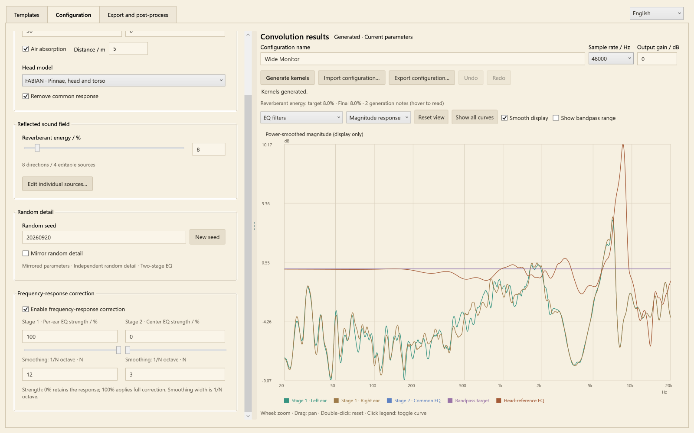
Enable frequency-response correction controls the correction chain. FABIAN's common head-power calibration precedes the adjustable tonal stages. The signal-model chapter explains how this differs from the dataset's common-response removal.
| Control | Default | What it changes |
| Stage 1 · Per-ear EQ strength / % | 100 | Correction of each ear's smoothed response to identical L/R inputs |
| Stage 1 Smoothing: 1/N octave · N | 12 | Width of the power smoothing used to design stage 1 |
| Stage 2 · Center EQ strength / % | 0 | Common correction based on the complex average of the two stage-1-corrected ear responses |
| Stage 2 Smoothing: 1/N octave · N | 3 | Width of the power smoothing used to design stage 2 |
Enter the denominator: 12 means 1/12 octave, while 3 means 1/3 octave. Larger denominators retain finer detail. Strength scales the correction in dB; 0% bypasses that stage. With strict random mirroring, stage 2 is unused.
All paths share the final scalar output calibration. Different input correlations still produce different spectra through the matrix; the individual paths are not each flattened independently. The response examples show the distinction. Strong correction, finite-length error and remaining smoothed deviation are reported under Result details.
Edit individual sources
Select Edit individual sources… on Configuration to open the detailed editor. The left list represents the editable half; the direction view shows the complete mirrored field. Click a direction to select it, or drag empty space to rotate the view. Reset orientation restores the view.
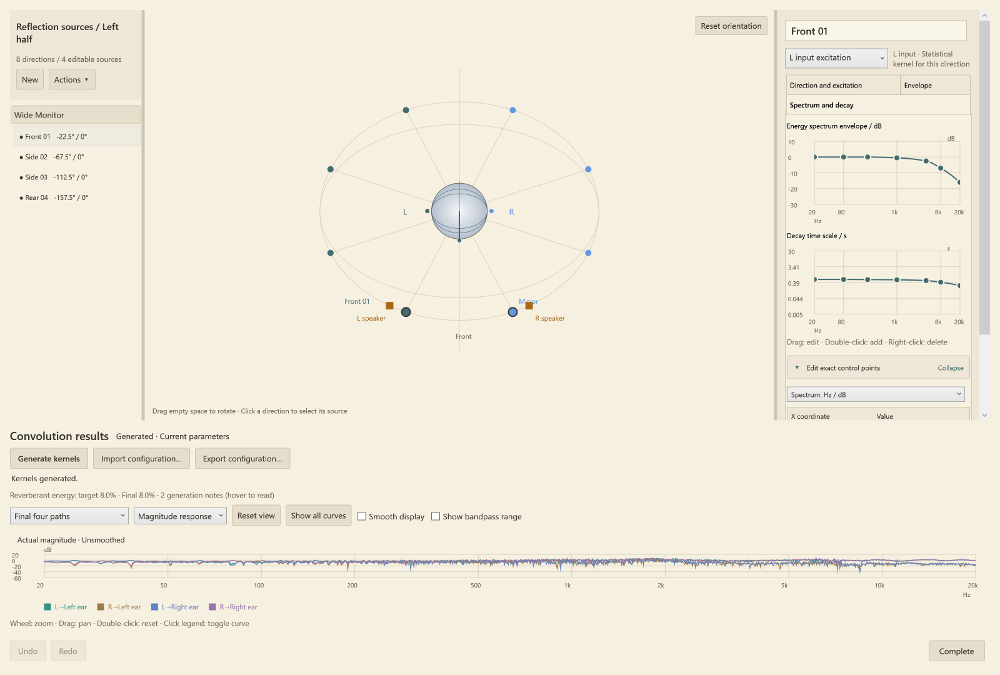
Choose the L or R excitation in the source editor. Automatic R excitation inherits L timing, with relative gain and spectral tilt; manual mode exposes its full parameters. L and R random realizations are independent by default, as are different directions. For one direction and one input, the same kernel feeds both ear filters, preserving their shared excitation.
Use the source list and Actions menu for multi-selection, parameter copying and deletion. Copying parameters preserves target directions and assigns independent random detail. Source-level changes can be inspected before the head or after it using the plot subject selector. Complete closes the editor and retains edits in the project. Generate again to update the final result.
Read and interact with the plots
Choose the subject first, then the plot type. For example, select Final per-ear response to identical inputs and Magnitude response to inspect the stage-1 reference after processing.
| Subject | Signal shown |
| Final four paths | The four finished kernels exported to WAV |
| Final per-ear response to identical inputs | Complex L/R input-path sums at each ear after correction |
| Per-ear response to identical inputs before EQ | The corresponding pre-EQ sums |
| Four direct-sound paths | Direct-path component before the final spatial EQ |
| Selected source before/after head processing | The selected source's excitation kernels or its ear paths, before final output correction |
| EQ filters | Head calibration, stage 1, stage 2 and bandpass responses |
| Plot type | What to look for |
| Magnitude response | Individual path spectra or the selected combined reference |
| Impulse response | Relative arrivals and tail structure around the shared time origin |
| Energy decay | Backward-integrated remaining energy, normalized for each displayed kernel |
| Unwrapped phase | Unwrapped phase with the common lead-in removed |
| Group delay | Frequency-dependent phase slope, also with the common lead-in removed |
Wheel to zoom, drag to pan, and double-click the plot or choose Reset view to reset. Click a legend entry to toggle a curve; double-click or use the context menu to isolate it. Show all curves restores the complete set.
Smooth display changes only the drawn magnitude curve, using the stage-1 smoothing width; it does not modify or regenerate the kernels. Show bandpass range extends the magnitude view down to 5 Hz and −100 dB. Turning it off restores the normal 20 Hz–20 kHz view. The 20 Hz and 20 kHz frequencies are inside the bandpass target's passband.
The illustrated analysis chapter walks through actual output spectra, decay curves and a time-frequency view. A kernel's file duration, a decay control and a measured RT estimate describe different things.
Export and routing
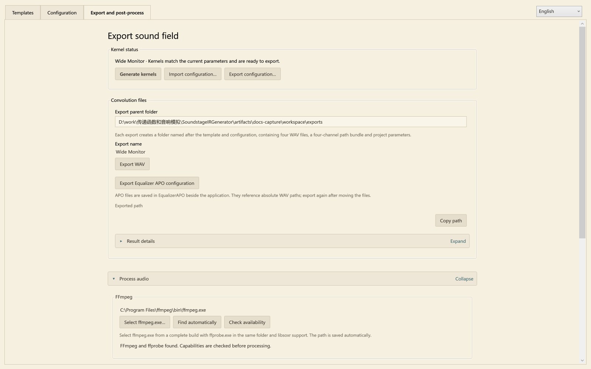
Export configuration… saves editable JSON parameters and seeds. It works before generation. Export WAV saves calculated impulse responses to Export parent folder. Export Equalizer APO configuration creates an EqualizerAPO/ subfolder beside the application with the four WAVs and their routing file.
Folders use readable template/project names and a timestamp. Renaming updates output names; name-only edits keep the kernel samples. Repeated exports use counters such as _02 rather than overwriting existing results. Paths and result text can be selected and copied; Copy path and Copy result details provide complete copies.
Four files, two output ears
The suffixes state input → ear. The four-channel bundle uses this order:
| Bundle channel | WAV suffix | Meaning |
| 1 | L_to_LeftEar.wav | L input → left ear |
| 2 | R_to_LeftEar.wav | R input → left ear |
| 3 | L_to_RightEar.wav | L input → right ear |
| 4 | R_to_RightEar.wav | R input → right ear |
The bundle is named Matrix_PATHS_LL_RL_LR_RR.wav. It is a matrix path package, not a conventional four-speaker recording. For the four mono files, the output equations are:
Left ear = L * L_to_LeftEar + R * R_to_LeftEar
Right ear = L * L_to_RightEar + R * R_to_RightEar
Here * is convolution. WAV output is IEEE float32 at 44.1, 48 or 96 kHz. Use every path with its original relative gain and timing.
Equalizer APO
Include the generated <name>_Equalizer_APO_Config.txt file in your own APO configuration. Its temporary channels are assigned from L/R, convolved separately, then replaced into the two output channels:
Copy: LL=L LR=L RL=R RR=R
# Each temporary channel is convolved with its matching WAV.
Copy: L=LL+RL R=LR+RR
The exported file contains all four Channel/Convolution sections and absolute WAV paths. The last Copy replaces L/R with the processed sums; an additional unprocessed copy is unnecessary. Match the device sample rate to the kernels. If files are moved, export again to obtain correct paths.
Keep the headphone EQ you normally use as the playback reference; the spatial kernels already contain their own field correction and bandpass. Output gain / dB and playback gain let you manage level. Result details include measured frequency peaks and a conservative transient bound; these are different from the common energy/reference calibration.
Song rendering
Open Export and post-process → Process audio to produce an ordinary stereo song with the current sound field baked in.
1. Click Select ffmpeg.exe… and choose a complete FFmpeg build containing ffprobe.exe in the same folder and supporting libsoxr. Selection checks the tools; Check availability checks them again. FFmpeg downloads lists available builds.
2. Drop an audio file into the panel or use Choose audio file. Mono and stereo input are supported, including WAV, FLAC, MP3 and M4A.
3. Choose Output format, Output parent folder and a level-processing mode.
4. Click Process and export audio. The input is resampled to the kernel rate, convolved, and exported with its complete tail. The input file is retained.
The application remembers the selected FFmpeg location in settings/audio-tools.json, separately from project JSON. Find automatically clears the explicit path and checks nearby tools/ffmpeg/, %ProgramFiles%/ffmpeg/bin/ and PATH. The portable download uses your chosen FFmpeg installation.
| Level mode | Behavior |
| Normalize to target LUFS, then limit | Measures convolved loudness, applies fixed gain toward the target (default −18 LUFS), then performs linked stereo limiting |
| Keep convolved level; limit peaks only | Omits the loudness-normalization gain and limits peaks |
| Bypass: raw convolution output | Exports the unmastered convolution result; float32 WAV can retain levels beyond integer full scale |
Output choices are float32 WAV, 24-bit FLAC and AAC/M4A. Encoding or peak management can affect the finished level; the final loudness and true peak are measured and recorded in render.json. Loudness gain is written into the samples, rather than depending on ReplayGain tags.
A rendered song already contains the spatial effect. Play it with duplicate spatial convolution disabled; personal headphone EQ can remain active.
Template reference
These values describe the authored starting fields. Individual directions can have different energy, decay and envelope curves. The 1 kHz tail reference is not a measured whole-kernel RT60.
| English template name | Directions | Layout | 1 kHz tail reference / s | Wet energy / % |
| Compact Monitor | 6 | Ring | 0.20 | 8 |
| Wide Monitor | 8 | Ring | 0.56–0.78 across directions | 8 |
| Frontal Space | 6 | Front sector | 0.24 | 9 |
| Warm Surround | 12 | Ring | 0.55 | 28 |
| Bright Short Hall | 8 | Sphere | 0.48 | 32 |
| Overhead Surround | 12 | Hemisphere | 0.62 | 24 |
| Control Room | 8 | Sphere | 0.22 | 5 |
| Free Field | 0 | Direct only | — | 0 |
| Gentle Concert Hall | 12 | Sphere | 1.35 | 65 |
| Long Hall | 12 | Sphere | 2.30 | 80 |
| Blank Template | 0 | Add your own directions | — | Actual 0 until reflections are added |
Built-in templates use FABIAN with common-response removal, independent mirrored random detail, stage 1 at 100% / 1⁄12 octave and stage 2 at 0% / 1⁄3 octave. Wide Monitor is the author's everyday starting point and includes 5 m of direct-sound air absorption. Default source data are rounded to readable values; user-entered precision is retained in editing and JSON.
Saving and returning to a project
Save with Export configuration…, then use Import configuration… to continue editing later. The JSON stores curves, directions, head settings, EQ, source identities and seeds. Generate after loading to recreate the field.
The writable portable folder holds projects/, exports/, EqualizerAPO/, processed-audio/ and local settings/. Keep the complete application folder together. For a reproducible comparison, share the configuration JSON along with the application version, headphone setup and changes you made.
Design philosophy and signal model
简体中文 · Home · Illustrated kernel analysis
Listening and tuning come first
Soundstage IR Generator adds space to headphone music through an editable sound field. Energy spectra, decay times and directional distributions correspond to audible changes. Saved parameters and random seeds make tuning reproducible and shareable.
A set of equivalent arrival directions around the head describes the reflected field. Each direction has a statistical kernel, rendered through head shadow, interaural timing, pinnae and torso responses. Six to twelve directions provide a practical editing space: a few distinct spectral and temporal profiles offer considerable variety.
Research constrains the statistics; listening guides the settings. Broad spectra and decay curves set the overall color and tail, while causal random kernels supply fine temporal and spectral detail. The authored presets offer starting points from compact monitoring to enveloping, long-tailed fields.
The field is authored for headphone listening: diffuse temporal detail and directional head cues can be tuned without prescribing a wall layout or particular loudspeaker. Broad tonal correction is part of that design. Minimum-phase EQ adjusts the smoothed spectral balance while preserving the statistical tail as a full impulse response; its strength remains a listening choice.
Direction kernels become four paths
For each direction d, fixed kernels g[d,L] and g[d,R] describe responses to the two inputs. The same direction/input kernel feeds both corresponding ear filters, h[left,d] and h[right,d].
H_{e\leftarrow i}=H^{direct}_{e\leftarrow i}+\sum_d h_{e,d}*g_{d,i}
Here i identifies the input, e identifies the ear, and * denotes convolution. The outputs are:
y_l=H_{l\leftarrow L}*x_L+H_{l\leftarrow R}*x_R,\qquad
y_r=H_{r\leftarrow L}*x_L+H_{r\leftarrow R}*x_R.
Direct speakers also pass through the head, optionally preceded by distance-dependent air absorption. The result is a fixed 2×2 linear system. Common normalization preserves relative path amplitudes and timing.
Energy, decay and phase are generated together
The generator uses smooth, overlapping bands spaced approximately one third of an octave apart, with power-complementary weights. Gaussian noise and a causal envelope create each band's response. The energy curve controls the integrated broad spectrum, the decay curve controls frequency-dependent time scales, and the full envelope controls local mean energy through onset, buildup and the tail.
Changing decay time recalibrates band energy, allowing tail length and total wet energy to be adjusted separately. Reflection density follows the buildup scale; energy during buildup may rise, remain level or fall.
Phase emerges from the complete time signal alongside magnitude and decay. In the simplified model g(t)=a(t)w(t), with white noise w:
\mathbb E[G(f)G^*(f+\Delta f)]=\int |a(t)|^2e^{j2\pi\Delta f t}\,dt.
The relation connects temporal energy distribution with cross-frequency correlation. Longer tails create finer spectral variation. Independent kernels with the same statistics add their covariances; energy normalization preserves their normalized correlation structure. Directions with different spectra or envelopes contribute according to their own profiles and weights.
The seed, stable source ID, input stream and fixed band order determine each realization. Editing one source retains other sources' random detail, supporting controlled comparisons.
Head models and the common response
The sphere offers a compact head-shadow and arrival-time model. FABIAN supplies head, pinna and torso responses; the renderer samples the nearest direction from the fixed HATO 0 dataset. The measured left-ear responses over the full sphere form the anatomical reference. The right ear uses the left-ear response at the mirrored source direction, forming a symmetric head. Magnitudes and notches within 20 Hz–20 kHz are retained; each direction and ear extends its own boundary magnitude outside that band. Responses are reconstructed directly at the selected sample rate with the measured in-band excess-phase structure and a common timing reference. The minimum-phase component follows the new magnitude target.
FABIAN defaults to the dataset author's smooth minimum-phase inverse common transfer function. Removing that shared spectrum lets directional differences combine with the listener's existing headphone calibration. Disabling it provides the complete dataset spectrum for comparison. Headphone calibration remains in the listener's playback chain.
The data represents blocked ear-canal entrances, with author-provided numerical completion at some low frequencies and lower directions. Sources, transformations and attribution are documented in the FABIAN notices.
The FABIAN EQ chain first tests all enabled directions with equal-energy unit impulses, averages binaural power noncoherently, and applies one common minimum-phase inverse to a flat target. This reference uses neither random reverberant kernels, inter-direction coherent cross terms, nor frequency smoothing. Bandwidth extension and head calibration are fixed processing steps with no individual configuration switches. Master EQ bypass includes head calibration; bandwidth extension still applies. The existing common-transfer compensation option remains available. Head-response details.
EQ is an adjustable tonal choice
After the common head calibration Q_h, identical input signals give:
M_l=Q_h(H_{l\leftarrow L}+H_{l\leftarrow R}),\quad M_r=Q_h(H_{r\leftarrow L}+H_{r\leftarrow R}).
With independent mirrored random detail, stage one equalizes the smoothed magnitude of each ear response. Stage two designs a common EQ from (Q_l M_l + Q_r M_r)/2. Strict random mirroring uses one common first-stage EQ. Filters are minimum phase; strength scales the correction in dB before filter construction.
EQ gain follows the smoothed target. Correction uses a fixed time budget derived from raw path length; finite-support response error is reported separately. Local positive-power integration avoids cancellation between loud and quiet spectral regions; zero or nonfinite references produce an explicit error. A common scalar calibrates the selected output reference level. Frequency peaks are reported as playback-headroom information.
Defaults are 100% for stage one, 0% for stage two, and smoothing of 1/12 and 1/3 octave respectively. Common correction designed from identical inputs also changes lateral content. Adjustable strength lets the listener choose the balance for their music.
A flat 20 Hz–20 kHz bandpass target is combined with both minimum-phase EQ stages in the frequency domain, followed by the original common gain calibration. Smoothed inversion includes the 10–20 Hz and upper transition regions; deep stopbands retain endpoint correction. Output length equals raw length plus the correction budget minus one. The budget is the larger of raw length and one second. A larger zero-padded FFT buffer supports synthesis; the output end is tapered and its response deviation is reported. Each reflection band receives a half-cosine envelope taper from −70 dB to zero at −80 dB before band-energy normalization. Analysis uses the generated kernels, exposing fine detail, smoothed spectra, impulses and decay so that listening observations can be compared with actual output.
Precompensating the final wet fraction
The generator caches direct and reflected complex spectra and component energy densities, then solves for one global wet amplitude coefficient. First-stage smoothing caches direct power, reflected power and the real cross spectrum; candidate gains combine these terms linearly. When stage two is enabled, the first-stage minimum-phase responses are retained to form the corrected complex ear sum. Energy prediction includes both EQ stages and the bandpass. A scalar root search operates in log gain. Random kernels and head responses are generated once; final time-domain synthesis follows the solve.
Precompensation scales the complete reflected field uniformly, preserving relative source spectra, directional weights and temporal structure. Direct and reflected sound then share the established spatial EQ. The final fraction is measured again from finite output kernels, with the gain, predicted fraction, evaluation count and residual reported.
From FABIAN to the sound at your ears
The generator starts from an already tuned headphone playback system. FABIAN supplies directional head cues, statistical reverberation supplies an editable space, and the physical headphones turn the two electrical signals into sound at the ears. Existing headphone EQ continues to provide the listener's familiar tonal reference.
The complete path from digital input to the eardrums is:
Stereo music → four-path convolution matrix K → existing headphone EQ → headphones and acoustic coupling → ears
In the frequency domain, neglecting acoustic leakage between the two headphone channels, the left-ear relationship is:
p_left(f) = P_left(f) × [K_left←L(f) × x_L(f) + K_left←R(f) × x_R(f)]
The right ear follows the same form. K includes the generator's head rendering, reverberation, final EQ and gain. P combines the user's headphone EQ, the headphones' electroacoustic response and their coupling to the pinna and ear canal when worn. This separates the digital sound field from the physical playback path.
What each correction does
| Processing | What it addresses |
| FABIAN common-response compensation | Uses the dataset's smoothed inverse common transfer function (CTF) to compensate shared spectral structure while retaining directional differences |
| Generator minimum-phase EQ | Shapes the smoothed digital output spectrum using the current four-path matrix and the selected reference input |
| Existing headphone EQ | Brings the physical headphones toward the listener's chosen tonal target, providing the playback foundation |
The plots describe the final digital kernels. Eardrum pressure also depends on P; predicting that path precisely requires the headphone transfer function for the listener wearing those headphones. Matching a preferred headphone target provides a practical playback reference, whereas measuring and inverting an individual headphone transfer function serves a different calibration goal. FABIAN's inverse CTF concerns the head dataset's common response rather than the inverse response of a particular headphone.
How spatial cues carry through playback
When the two playback transfer functions are approximately equal, P_left(f) ≈ P_right(f), they mainly act as a common filter. For a given virtual direction, that common factor cancels in the complex response ratio between the ears. The digital interaural level and relative phase differences can therefore be approximately preserved.
Common filtering still changes the relative weighting of frequency bands, and monaural pinna spectral cues are also affected by playback. Differences in left/right coupling, headphone placement and the listener's anatomy relative to FABIAN all contribute to the resulting timbre, direction and externalization. The project therefore uses existing headphone tuning as a reference and leaves direction distribution, reverberation and spatial EQ available for listening-based adjustment.
Headphone transfer functions and placement variability are also important in binaural reproduction research. Schärer and Lindau (2009) compare headphone equalization methods and discuss individual differences and repositioning effects.
This approach serves the goal of adding adjustable space to a headphone tonal balance the listener already enjoys. Reproducing the sound pressure of real speakers more precisely can involve measuring individual headphone transfer functions and designing playback compensation at a consistent measurement reference position. FABIAN uses blocked ear-canal entrances as its reference; that extension also needs to account for entrance-to-eardrum transmission and the headphones' acoustic loading. The project's general-purpose approach combines existing headphone tuning, common-response compensation and adjustable digital tonal correction.
Preset authorship
Wide monitor embeds the author-approved configuration, including source identities, curve shapes, 8% reflected energy and 1/12-octave first-stage EQ smoothing. General defaults remain 1/12 octave.
Control room is an authored statistical field informed by control-room listening comparisons: direct sound dominates, an early energy drop leads into a quieter short tail, and upper-frequency reflected energy and decay gradually decrease. The 0.22 s tail scale and 5% wet energy are design choices. The eight mirrored directions have modest differences in level and timing. The full envelope uses points −2, −6, −20, −36, −60 dB at normalized positions −1, 0, 0.08, 0.35, 1. This separates a quick early decline from a small residual tail. Measured output is checked separately from these reference scales.
Free field removes the statistical reflection contribution and retains the two head-filtered speakers. Common-response removal, EQ and output band limiting remain available as in the other templates.
Research background
Traer and McDermott (2016) study the statistics and perception of natural reverberation, informing frequency-dependent decay. The FABIAN dataset and paper provide directional head responses. Statistical synthesis, authored presets and adjustable EQ form this project's field-design method.
Reading the kernel plots
简体中文 · Home · User guide · Signal model
The plots below use actual kernels generated by Soundstage IR Generator 4.13.0. They explain what to compare when tuning a field: directional response, combined tone, reflected energy and decay over time.
All examples use the built-in template parameters, 48 kHz, seed 20260920, FABIAN with common-response removal, stage-1 correction at 100% with 1/12-octave smoothing, and stage 2 at 0%. The numerical results and file hashes are recorded in analysis metadata.
Individual paths and combined responses
A stereo-to-binaural renderer has four transfer functions. Consider just the left ear: call the L-input path A(f) and the R-input path B(f). Its output is A L + B R.
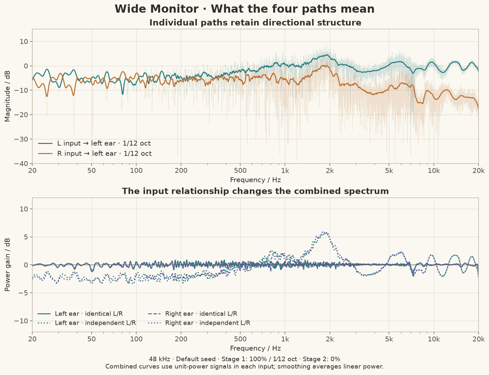
The upper panel shows the two final paths feeding the left ear in Wide Monitor. Faint lines show unsmoothed FFT magnitudes; strong lines show 1/12-octave power-smoothed curves. The crossed path loses more high-frequency energy, while both paths retain directional structure. A single path is not the reference that stage 1 flattens.
The lower panel compares two input relationships, with unit power in each input:
| Inputs | Left-ear output power |
| Identical, in-phase L and R | |A + B|² |
| Independent L and R with equal power | |A|² + |B|² |
For identical inputs, phase matters through the cross term. For independent inputs, that cross term averages to zero. These are two different ways to excite the same fixed matrix; the dotted and solid lines need not coincide.
Stage 1 uses the smoothed identical-input response of each ear. Its corresponding solid curves sit near the output reference in this example. The independent-input curves have a different contour. Stage 2, if enabled, instead adds a common correction derived from the complex average of the already corrected two ear responses. It does not isolate or extract a musical center source.
In the application, select Final four paths to inspect directional paths, or Final per-ear response to identical inputs to inspect the combined reference. Smooth display changes only the display. The lower panel's independent-input calculation is an additional offline illustration, rather than a separate app plot mode.
A stereo recording's correlation changes across frequency and time. Comparing these references helps explain why EQ strength can alter the tonal balance of one recording differently from another.
Tail duration and wet fraction
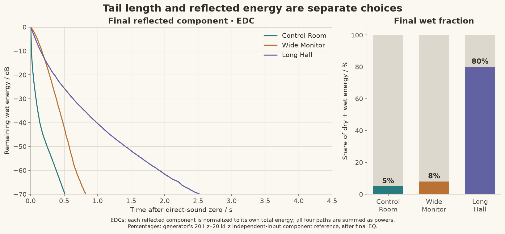
The left panel contains energy-decay curves (EDCs) for the final reflected component alone. For each template, squared samples from all four reflected paths are summed, integrated backward from the end, and divided by that template's total reflected energy:
EDC(t) = 10 log10 [remaining reflected energy after t / total reflected energy]
Each curve therefore starts at 0 dB even when the actual wet fractions differ. Control Room loses reflected energy quickly; Wide Monitor retains a longer, modest tail; Long Hall sustains a much longer tail. The right panel restores the missing level context: their generator-reported final reflected fractions are 5%, 8% and 80%, respectively.
The bars use the generator's independent-input, 20 Hz–20 kHz, two-ear component-energy reference after EQ. They exclude dry/wet cross terms. They are not percentages of perceived loudness or fractions guaranteed for every song.
Three different meanings of “long”
| Template | Output file duration | Broadband wet-only T20 extrapolation | Final wet fraction |
| Control Room | 1.725 s | 0.171 s | 5.00% |
| Wide Monitor | 2.749 s | 0.698 s | 8.00% |
| Long Hall | 8.702 s | 1.259 s | 80.00% |
Output file duration includes the synthesis support and very quiet ending of the final filters. Decay time scale in the template is a frequency-dependent envelope parameter. T20 extrapolation here fits a straight line to the broadband wet EDC between −5 and −25 dB and extrapolates that slope to a 60 dB drop.
The three quantities need not match. A shaped envelope and frequency-dependent tails can change slope over time. For example, a small late component can extend the file while contributing little to total energy. The fitted values above characterize the broadband decay of these particular generated wet components. The fit intervals and goodness-of-fit are included in the metadata.
Use the EDC shape to inspect the whole decline, the envelope editor to change its course, and Reverberant energy / % to adjust its weight against direct sound.
The tail changes color over time
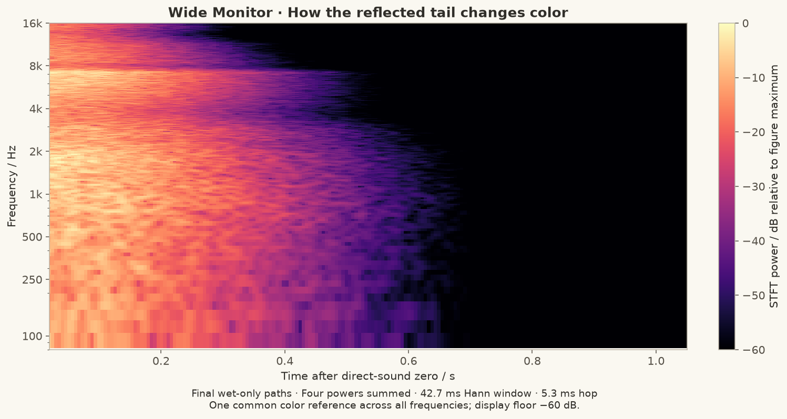
This spectrogram contains only Wide Monitor's final reflected paths. Time is relative to the direct-sound reference. Powers from all four paths are summed, using a 2048-sample Hann window and a 256-sample hop: about 42.7 ms and 5.3 ms at 48 kHz.
The color scale has one common reference across all frequencies. A darker upper-right region means less high-frequency reflected energy remains late in the tail. It is not produced by independently rescaling each frequency row.
Two settings contribute differently:
• The energy spectrum sets how much total energy each region receives.
• The decay time scale sets how that energy is distributed over time.
Final head processing and EQ further shape the plotted result. Lowering high-frequency energy and shortening its decay can both be useful, but they are separate adjustments: a quiet long high-frequency tail differs from a louder short one. The spectrogram exposes that distinction more clearly than a whole-kernel FFT.
The window averages over tens of milliseconds. Inspect Impulse response in the application for the direct peak and the first few milliseconds; this spectrogram is intended for the broader tail.
Phase and group delay in context
The application's Unwrapped phase and Group delay plots remove the shared direct-reference lead-in. Individual path delays and the temporal structure of the tail remain.
Read these alongside magnitude and impulse response. A detailed phase curve belongs to a detailed, fixed time-domain kernel. Group delay is a local phase slope; around interference minima it need not represent the arrival time of a separate reflection. For tuning, use the impulse response to locate arrivals, the decay plot to inspect persistence, and the phase/group-delay views to compare the same path between configurations.
The renderer retains the statistical kernel's generated phase structure. Minimum-phase correction describes the EQ filters; the complete reflected tail is not converted into a minimum-phase impulse.
Figure provenance and reproduction
Source: commit 42c782826e9fd68503345deae77885837203f291 (4.13.0). The screenshots in the guide are offscreen renders of the English and Chinese WPF controls from that source. Template parameters and synthesis code were not changed for the figures.
The analysis reads float32 snapshots of GenerationResult.Kernels and FinalReflectionPaths; the final path bundle uses the same samples and route order as WAV export. Directional paths and component powers are kept separate throughout the calculations.
| Figure | Calculation |
| Path spectra | Zero-padded FFT to the next power of two; 20 log10 of magnitude; no sample normalization |
| Smoothed spectra | Integrate linear power over f × 2^(±1/24), divide by interval width, then take 10 log10 |
| Combined references | Form complex path sums or sums of path powers before smoothing |
| Wet EDC | Sum squared samples across the four final wet paths, integrate backward, normalize to total wet energy |
| T20 illustration | Least-squares slope over the wet EDC's −5 to −25 dB interval; estimate −60 / slope seconds |
| Spectrogram | Four STFT powers summed, one global color reference; displayed from 80 Hz to 16 kHz with a −60 dB floor |
To compare your own settings, save the JSON and keep the seed fixed, regenerate after each parameter change, and inspect the same subject and plot mode. The user guide lists the app's plot subjects and controls.
音箱版
English · 首页
发布目录中的 SoundstageSpeakers.exe 提供“简单混响”和“复杂空间音效”。启动时选择模式，随后使用与耳机版相同的模板、配置、图表和导出界面。窗口右上角可切换中文与英文。
简单混响
适合一般的音响染色任务。
左右两条核分别送入左右音箱，编辑能量频谱、随频率变化的衰减和完整包络。联动参数时，左右仍有独立的随机细节。生成后校准混响能量占比；关闭直达声得到全混响。
复杂空间音效：F × C ≈ T
适合能够严格控制音响摆位，并接受 FABIAN 头部近似的用户。
• 实际音箱／自由场 F：按输入的实际摆位生成完整的自由场双耳卷积响应。
• 虚拟音箱／目标 T：按虚拟音箱、反射源和 EQ 设置，生成普通耳机版的目标响应。
• 转换核 C：导出给音箱播放的四条核，使 F × C 尽量接近 T，允许共同的因果延迟。
F 和 T 都使用原生成器的校准与输出链路，包括启用的人头非相干功率校正、每耳平滑最小相位 EQ、共同 EQ、带通和共同电平标定。实际播放参考使用 FABIAN，沿用当前共同频响补偿和 EQ 设置，输出基准为 0 dB；目标 T 使用界面选择的人头、EQ 和输出电平。
这里的 F 是软件约定的校准后自由场参考。软件串联吻合验证的是这套参考与目标的关系；真实音箱、人头和房间的传递函数需要通过实际试听或测量评估。
两套音箱位置
“虚拟音箱”控制希望听到的声场；“实际音箱”控制需要补偿的播放路径。实际摆位以两耳中点为原点，正前方为 0°、左负右正、仰角向上为正，距离填写音箱到两耳中点的米数。
模板确认后进入配置页，按实际音箱、虚拟音箱、人头设置的顺序编辑，再生成卷积核。复杂模式模板弹窗只提供确认，不直接生成。
实际音箱默认启用空气吸收，以各自距离计算。采用远场 FABIAN 方向响应，不做近场修正。镜像等距时，共同传播延时与电平归一化，中心响应的距离影响仅来自空气吸收；关闭空气吸收后，这种摆位的中心响应不随距离改变。不等距时保留 1/r 相对电平与传播时差；固定位置检查仍使用真实几何距离。
相对播放矩阵的求逆增益控制转换预算。求逆依靠精确的相位干涉；增大预算可能减少还原误差，也可能增加相消需求，使听音位置、人头差异及摆位误差更容易造成意料之外的不稳定结果。
图表分组
复杂模式的图表按结果对照、求逆与输出、实际音箱、目标声场、反射源分组。默认显示目标与还原结果对照。
“求逆与输出 → 求逆算子 K”显示求解器实际采用的正则化算子，记录的是 C = I + K(T − F) 中的 K，包含播放路径中人头、空气吸收及自由场校准的影响。幅频、相位和群延迟来自求解时的系数；该频域算子尚未因果化，因此此选项不提供冲激和衰减图。“输出核 C”展示实际导出的四条卷积核。
建议虚拟音箱角度接近实际音箱角度。相差过大可能需要极强相消，导致极端响应或明显还原误差；角度编辑区域直接显示该提示。
参数预检查与生成检查
修改复杂模式参数后自动进行方向单位冲激探针检查；超出求逆预算、重合摆位或极近距离会将实际音箱设置框与原因标红。预检查不合成长混响核，估计的是几何与目标方向的难度。
位置检查使用七个固定采样点：中心、左右／前后各偏移 5 cm、左右转头各 5°。保持 C 及中心位置的校准滤波器不变，以独立等功率 L/R 激励计算各采样点的每耳功率频响，做 1/3 oct 平滑后，计算位置间的 dB 标准差，再在双耳与对数频率上取 RMS，得到“位置变化参考值”。没有位置范围设置项。
生成后的红色提示位于图表旁和导出页，导出说明与 metadata.json 同样保存结果：
| 指标 | 当前提示阈值 |
| 实际驱动矩阵最大奇异值增益，含同相与差分输入 | 高于 18 dB |
| 相消代价：两箱单独贡献的功率和／合成后功率，1/3 oct 平滑 | 高于 12 dB |
| 相对复响应重建误差 | 高于 −15 dB |
| 平滑频响相对目标的 RMS 偏差 | 高于 1 dB |
| 因果化投影残差 | 高于 −50 dB |
| 固定位置采样的频响标准差 | 高于 3 dB |
这些是工程提示阈值。位置标准差用于比较同一套固定核随位置变化的频响离散程度，包含正常的人头位置变化；它不是声像定位准确度或保证有效的听音范围。检查结果不改变归一化，也不会自动调小音量。
求解
在每个频率用 s = √(‖F‖²_F / 2) 去掉共同尺度，令 A=F/s、B=T/s，求解：
C = I + (AᴴA + λI)⁻¹Aᴴ(B − A)
带外极低能量处，修正项平滑趋向零。相同 F 和 T 得到单位通路，共同带通不会变成独立求逆的大增益。λ 同时包含求逆增益预算及最弱奇异值功率的 1/6 oct 局部约束，降低窄谷的精确追补。保留复相位，按投影残差确定共同延迟。界面中的延迟来自实际生成结果。例如，默认宽阔监听的验证结果为 341.33 ms；用于视频或实时音频时，需要考虑结果中显示的延迟。
图表与工作流程
选择模板 → 配置并生成 → 导出与后处理。详细反射源编辑在独立窗口内；生成按钮位于图表旁，导出页也可重新生成。修改参数后，旧结果显示过期，重新生成后可导出。
复杂模式默认显示“目标 T 与串联 F × C”的双耳合成响应对比，也能查看输出 C、目标 T、串联结果、自由场 F 及 F 的 EQ 各阶段。分析采用实际输出核，支持频响、脉冲、能量衰减、相位、群延迟、缩放、平移和图例开关。快速切换时过期分析被取消，图表选择不会重复重建自身。
导出与对照试听
简单模式导出两条单声道 WAV；复杂模式导出四条单声道路径及四通道路径包，顺序为 L → 左音箱、R → 左音箱、L → 右音箱、R → 右音箱。常规音箱播放导入名称含 Equalizer_APO配置／Equalizer_APO_Config 的主文件。
复杂模式另提供 名称_Cascade_Test.txt：用耳机做软件串联对照时，单独导入这个文件。它按 C → F 顺序运行，F 的确切四条核位于 FreeField_Reference 子目录。不要同时再启用主配置，否则会重复处理。矩阵处理顺序必须保持，C → F 对应 F × C。
配置内使用绝对 WAV 路径，请保持导出目录位置；播放采样率与文件一致。歌曲离线处理使用输出 C，支持外部 FFmpeg、−18 LUFS 加限幅、仅限幅及原始电平浮点 WAV。
模型依据
• FABIAN 数据库论文
• Duda 与 Martens：距离效应背景（本版播放模型未启用近场修正）
• 双音箱串扰消除研究
Loudspeaker edition
简体中文 · Home
SoundstageSpeakers.exe offers Simple reverb and Complex spatial audio. Choose a mode at startup, then use the same template, configuration, analysis and export interface as the headphone application. Chinese and English are available at the top right.
Simple reverb
For general loudspeaker sound coloration.
Two kernels feed the left and right loudspeakers. Edit energy spectra, frequency-dependent decay and complete envelopes. Linked parameters retain independent random detail. Wet energy is calibrated after EQ; disabling direct sound produces fully wet output.
Complex spatial audio: F × C ≈ T
For users who can precisely control speaker placement and accept the FABIAN head approximation.
• Actual speakers / free field F: a complete binaural free-field convolution response generated for the entered playback geometry.
• Virtual speakers / target T: the ordinary headphone response generated from the virtual speakers, reflection sources and EQ settings.
• Transform C: four exported loudspeaker-drive kernels, solving F × C ≈ T with a common causal delay.
Both F and T use the original calibration/output chain: enabled incoherent head-power correction, per-ear smoothed minimum-phase EQ, common EQ, bandpass and common level calibration. F uses FABIAN with the current common-response and EQ settings at a 0 dB output reference. T uses the selected head model, EQ and output level.
F is the software's calibrated free-field reference. A successful software cascade validates its relationship to T; actual loudspeaker, listener and room transfer functions are assessed through listening or measurement.
Actual versus virtual positions
Virtual speakers define the desired scene. Actual speakers define playback to compensate. Use the midpoint between the ears as origin: forward 0°, left negative, right positive, elevation positive upward. Enter speaker-to-ear-midpoint distance in metres.
Confirm the template to enter configuration, then edit actual speakers, virtual speakers and head settings in that order before generating. Complex-mode template dialogs offer confirmation without immediate generation.
Actual-speaker air absorption is enabled by default and uses each speaker's distance. Playback uses far-field FABIAN directional responses without near-field correction. For mirrored, equidistant speakers, common travel time and level are normalized; distance affects the centre response only through air absorption. With air absorption off, the centre response is independent of that common distance. Unequal distances retain relative 1/r levels and travel delays. Fixed-pose checks still use the actual geometry.
The relative inverse-gain setting controls the transform budget. Inversion relies on precise phase interference: increasing the budget may reduce reconstruction error while requiring stronger cancellation, making reproduction unexpectedly sensitive to listener position, head differences and placement errors.
Plot groups
Complex-mode plots are grouped into Comparison, Inverse & output, Actual speakers, Target field and Reflection source. The default compares the target with the reconstructed result.
Inverse & output → Inverse operator K displays the regularized operator actually used in C = I + K(T − F), including the head, air absorption and calibration in the playback reference. Magnitude, phase and group delay come from the recorded solver coefficients. This frequency-domain operator is shown before causal projection, so impulse and decay plots are unavailable for this selection. Output C shows the four kernels actually exported.
Keep virtual speaker angles close to actual speaker angles. Large differences may require extreme cancellation and produce extreme responses or substantial reconstruction errors. This guidance is visible beside the virtual angle controls.
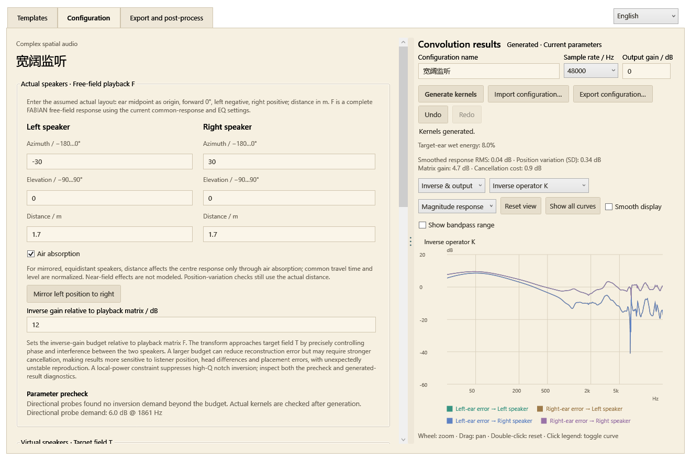
Precheck and generated-result checks
Editing complex-mode parameters automatically runs directional unit-impulse probes. Demand beyond the inverse budget, coincident speaker paths or very close distances turns the actual-speaker group and its explanation red. This checks geometry and target directions without generating long random reverberation.
Position checks use seven fixed poses: centre, lateral/fore-aft offsets of ±5 cm, and yaw of ±5°. C and centre calibration stay fixed. With independent equal-power L/R input, each ear’s power response is smoothed over 1/3 octave. The dB standard deviation across poses is combined as an RMS across ears and logarithmically spaced frequencies into the position-variation reference value. There are no position-range controls.
Red result panels appear beside the plots and on the export page. The import guide and metadata.json retain the results:
| Metric | Warning threshold |
| Actual drive-matrix maximum singular-value gain, including common and differential inputs | Above 18 dB |
| Cancellation cost: summed separate-speaker contribution power / combined power, smoothed over 1/3 octave | Above 12 dB |
| Relative complex reconstruction error | Above −15 dB |
| Smoothed tonal RMS error relative to target | Above 1 dB |
| Causal projection residual | Above −50 dB |
| Frequency-response standard deviation across fixed poses | Above 3 dB |
These are engineering notification thresholds. The position standard deviation measures response dispersion across fixed poses, including natural head-motion effects. It is not a localization-accuracy score or a guaranteed listening area. Checks preserve normalization and do not automatically attenuate the output.
Solver
At each frequency, remove the common scale s = √(‖F‖²_F / 2), defining A=F/s and B=T/s:
C = I + (AᴴA + λI)⁻¹Aᴴ(B − A)
The correction fades towards zero at extremely low out-of-band energy. Identical F and T produce identity; the common output bandpass is not separately inverted into large boosts. λ combines the inverse-gain budget and a 1/6-octave local constraint on weakest singular-value power, reducing narrow-notch inversion. Complex phase is retained. Projection residual determines the common causal delay, displayed with the actual result. For example, the default Wide monitor validation produced 341.33 ms; account for the displayed delay when using the kernels with video or live audio.
Analysis and workflow
Templates → Configuration and generation → Export and post-processing. Detailed reflection sources open in a separate window. Generate beside the plots, or regenerate on the export page. Parameter changes mark existing output as stale until regeneration.
Complex mode defaults to an overlay of target T and cascade F × C L/R responses. Other subjects include output C, target paths, cascade paths, free field F and F's EQ stages. Actual output samples drive magnitude, impulse, energy-decay, phase and group-delay plots, with zoom, pan and clickable legends. Rapid switches cancel obsolete analysis; changing a subject does not recursively rebuild its selector.
Export and comparison
Simple mode exports two mono WAVs. Complex mode exports four mono paths and a four-channel path bundle, ordered as L → Left speaker, R → Left speaker, L → Right speaker, R → Right speaker. For ordinary speaker playback, import the main file containing Equalizer_APO_Config / Equalizer_APO配置.
Complex exports also contain name_Cascade_Test.txt. For a headphone software-cascade comparison, import this file alone. It applies C first, then F. The exact F kernels are in FreeField_Reference. Do not also enable the main C configuration. Matrix order matters: C followed by F implements F × C.
Configuration paths are absolute: keep the export directory in place and match device sample rate. Offline song processing uses output C, with external FFmpeg selection, −18 LUFS plus limiting, limiting only or original-level float WAV.
Model references
• FABIAN database paper
• Duda and Martens: distance-effect background (near-field correction is not enabled in this playback model)
• Two-loudspeaker crosstalk cancellation